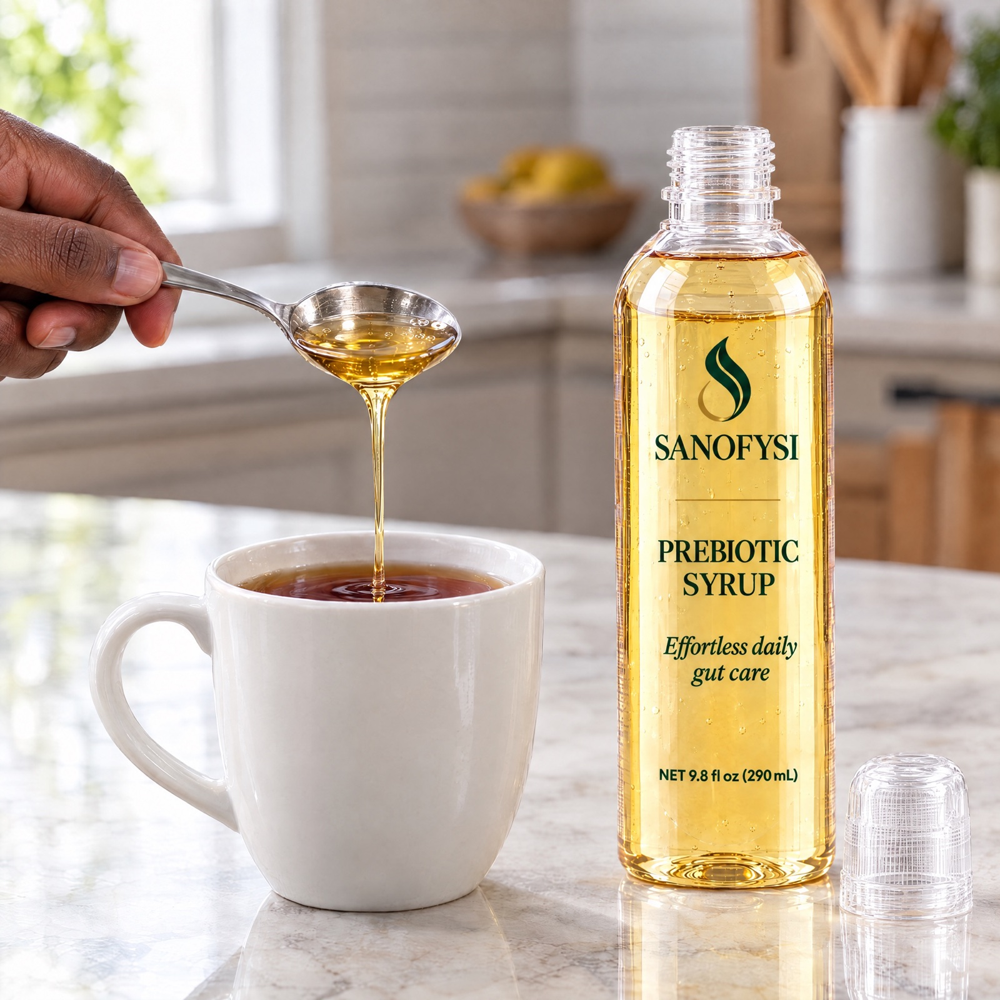

Prebiotic Syrup
A prebiotic fibre syrup with the fibre of 3½ bowls of oats in one spoon. Stir it into tea, coffee or juice.
- 14.3 g of prebiotic fibre (FOS) per spoon
- A lower-sugar sweetener: 1.6 g of sugars
- 100% plant-based
Sanofysi builds brands that each do one job well: Prebiotic Syrup, a daily fibre supplement for gut health, and Sacre Crown, hair building fibres for a fuller hairline. More are on the way.

A prebiotic fibre syrup with the fibre of 3½ bowls of oats in one spoon. Stir it into tea, coffee or juice.
Hair building fibers for men and women: a hair fiber powder and spray that cover thinning hair, bald spots and hairlines in seconds.
Sanofysi is the company behind Prebiotic Syrup and Sacre Crown. We don't sell a little of everything under one name. Each brand we build has its own shop, its own look and one clear purpose, so you always know what it is for.
We started with two everyday needs: getting enough fibre, and feeling good about your hair. They are the first two. The same approach is going into the products we release next.
One job, done well.
That is the rule behind every Sanofysi product. If we can't say what it is for in one sentence, we don't make it.
Order from either brand's shop and it comes from us. We deliver to every country in Africa and to customers worldwide.
 Sanofysi
Sanofysi
Liquid fibre supplement for gut health. 14.3 g of fibre per spoon, 290 mL.
Sacre CrownKeratin hair fiber powder for thinning hair and bald spots. Black, 27.5 g. $29.
Sacre CrownThe hair fiber spray kit: fibres, hold spray and spray applicator in one box. $29.
SanofysiNew products are in development.
Prebiotic Syrup and Sacre Crown are where we started, not where we stop. We are developing more products for everyday health and personal care, each built the same way: one clear job, honest numbers and a shop of its own.
New launches will appear on this page first.